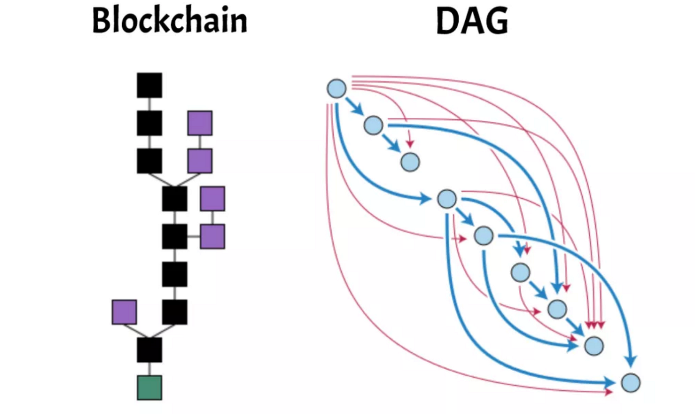

I. Qu'est-ce que c'est la blockchain ?
Une blockchain est l'infrastructure qui permet le déploiement d'une cryptomonnaie. Ainsi il ne peut exister de crypto sans blockchain, mais l'inverse n'est pas vrai : une blockchain peut totalement exister sans nécessiter une cryptomonnaie.
Une blockchain est, dans l'idée, décentralisée. C'est à dire qu'aucun organisme ou individu spécifique n'a le contrôle sur le réseau, tous les utilisateurs de ce réseau sont sur le même point d'égalité, ils disposent donc des mêmes pouvoirs et des mêmes devoirs.
Ainsi, les cryptomonnaies se servent de l'infrastructure du réseau blockchain pour pouvoir émettre et être utilisées.
🔧 Définition technique
La blockchain c'est l'infrastructure qui permet l'enregistrement de données, de sorte à garantir une viabilité et traçabilité parfaite de celles-ci.
Bien que souvent comparée à un serveur décentralisé, la blockchain peut aussi s'apparenter à un grand livre, ou registre, où l'on vient y inscrire des informations (datas / données) importantes, de toutes sortes. Une fois enregistrées dans une blockchain, les données sont garanties d'être inchangeables, sûres et surtout inviolables.
Ainsi la donnée inscrite dans une blockchain peut, comme pour Bitcoin, être relative à l'activité économique effectuée par les utilisateurs, qui réalisent des transactions. Pour Bitcoin l'essentiel des informations inscrites dans la blockchain pourrait se vulgariser tel quel :
Wallet X envoie tant de BTC à wallet YWallet Z envoie x BTC vers wallet X
On utilisera désormais le terme wallet au lieu de portefeuille, qui est son équivalent anglais et qui demeure le mot utilisé dans le jargon des cryptos.
On inscrit ainsi dans la blockchain Bitcoin toutes les informations liées à l'activité financière de la crypto BTC, de sorte à avoir une viabilité parfaite (toutes les transactions inscrites sont vérifiées et donc sûres) mais aussi garantie d'avoir l'historique de toutes les transactions émises (la blockchain rendant les informations inchangeables), et donc une traçabilité totale de l'activité financière qui s'y déroule.
⛏️ Le rôle des mineurs et la décentralisation
Mais qui peut écrire dans ce livre ? Car si n'importe qui pouvait le faire, sans aucun contrôle, on pourrait alors inscrire des transactions fausses ou impossibles.
De fait, il faut donc obligatoirement qu'une personne vérifie la faisabilité et la viabilité de la transaction. Problème : une blockchain est décentralisée, il n'y a donc aucune autorité centrale qui pourrait réguler et agir tel un gendarme sur le réseau.
Le moyen est assez technique mais plutôt facile à appréhender. Il se nomme le consensus de preuve de travail, ou proof of work (PoW), plus communément connu sous le nom de mining.
Comment fonctionne une transaction Bitcoin ?
- Lors d'un transfert de 10 BTC du Wallet Z au Wallet A, un validateur va vérifier, grâce à des calculs complexes, que les wallets existent bien.
- Il vérifie ensuite que le portefeuille Z possède bien la somme qu'il souhaite échanger + qu'il dispose bien des frais de transaction pour récompenser le validateur.
- Si ces données sont valides, alors le validateur va donner son feu vert pour inscrire cet échange dans la blockchain.
- Afin de s'assurer de la bonne foi du validateur, d'autres vont venir vérifier son résultat. Lorsque 20 validateurs différents l'ont confirmé, ils regroupent la transaction avec d'autres transactions validées.
- Ce groupe de transactions valides va être scellé dans un bloc. Pour l'inscrire à tout jamais dans la blockchain il faut alors le crypter en résolvant une équation mathématique complexe.
- Le premier ordinateur de validateur à trouver la réponse gagne le droit de sceller le bloc. Il reçoit en échange des nouveaux bitcoins. C'est comme cela que sont créés, ou minés, les bitcoins.
Les forces de la blockchain sont donc l'aspect communautaire et équitable mais surtout son caractère de base de données inviolable car détenue par tous les participants totalement égaux. C'est ce principe de décentralisation qui mène à la révolution de la technologie blockchain et in fine, des cryptomonnaies.
II. Le système de consensus, ou la preuve du réseau
Comme évoqué précédemment, les données ancrées sur la blockchain sont vérifiées et prouvées par le réseau. On appelle cela les méthodes de consensus. Chaque méthode a ses avantages et ses inconvénients, et il est impossible de dire à l'heure actuelle laquelle est la plus performante.
a) Le PoW, Proof of Work (preuve de travail)
Le PoW est la première méthode de consensus créée car il s'agit de celle utilisée par la blockchain Bitcoin. Cette méthode utilise le mining afin de vérifier et sécuriser le réseau.
En échange de leur participation pour sécuriser le réseau, les mineurs perçoivent des rewards (récompenses) sous forme de bitcoin. C'est ainsi que la création monétaire de la cryptomonnaie se fait.
✅ Avantages du PoW : L'entière décentralisation qu'apporte ce système. Le fait que de simples particuliers peuvent mettre à disposition leur puissance de calcul permet aux blockchains utilisant ce mode d'être totalement autonomes.
❌ Inconvénients du PoW : L'aspect écologique. Puisque pour sécuriser et débloquer de nouveaux tokens, il faut impérativement mettre à disposition la puissance de calcul d'ordinateurs, ce qui crée une surconsommation d'électricité. Cependant, cela reste extrêmement peu comparé à d'autres systèmes de notre quotidien (serveurs Amazon, trajets en avion, production industrielle...).
b) Le PoS, Proof of Stake (preuve d'enjeu)
Le PoS est un type de consensus qui se répand de plus en plus. Ethereum a passé son réseau du consensus PoW au consensus PoS lors d'une mise à jour en 2022. Avalanche, Cardano, ou Binance Smart Chain utilisent aussi ce système.
Contrairement au PoW, le PoS ne nécessite pas d'engager la puissance de calcul des mineurs. Les personnes qui sécurisent le réseau sont appelées les validateurs. Dans ce mode de consensus, le système choisit aléatoirement de donner la création d'un bloc à ceux qui auront bloqué leurs fonds sur le réseau. C'est ce que l'on appelle le staking.
✅ Avantages du PoS : L'aspect écologique, car il ne nécessite pas de grande quantité d'électricité afin de sécuriser le réseau.
❌ Inconvénients du PoS : Peut se révéler injuste pour les particuliers. Le réseau préférera toujours déléguer la création d'un bloc au validateur qui dispose du plus grand nombre de tokens bloqués, avantageant ainsi les gros investisseurs.
c) D'autres types de consensus
Bien que moins répandus, d'autres consensus existent :
- PoH (Proof of History) : Preuve d'historique, utilisé par Solana. À ne pas confondre avec le Proof of Hold.
- DPoS (Delegated Proof of Stake) : Preuve d'enjeu délégué, utilisé par BitShare, EOS ou Linsk.
- PoI (Proof of Importance) : Preuve d'importance.
- PoC (Proof of Capacity) : Preuve de capacité.
III. Pourquoi tant de blockchains différentes ?
Comme dans tout marché, quand une nouvelle technologie prometteuse fait son apparition, des concurrents viennent réclamer leur part du gâteau. Une blockchain peut être faite de différentes manières : le code source peut varier énormément d'une blockchain à une autre.
a) Le trilemme des blockchains
Un trilemme est un dilemme à 3 possibilités. Les blockchains se doivent d'être optimisées sur trois principaux axes :
- Scalabilité : La capacité d'une blockchain à accueillir toujours plus de nouveaux utilisateurs, sans perdre en performance (sans congestion du réseau).
- Sécurité : Tout le système permettant de protéger les données, d'empêcher les hacks ou toutes autres attaques informatiques.
- Décentralisation : Le fait que l'entreprise qui a créé la blockchain n'a pas de pouvoir décisionnaire ; le système tourne seul car c'est un algorithme qui procède de façon automatique et autonome.
b) Les smart contracts et applications décentralisées (DApps)
La blockchain Bitcoin a pour seule utilité de régir la cryptomonnaie BTC. Elle ne permet pas la création de ce qu'on appelle les smart contracts.
L'émergence de blockchains permettant la création de smart contracts a été mise en place pour la première fois par Ethereum. Grâce à Ethereum, des applications ou projets décentralisés peuvent utiliser le réseau Ethereum pour s'ancrer sur la blockchain.
Parmi les blockchains permettant l'émergence de smart contracts : Binance Smart Chain, Avalanche, Solana, Harmony One... Les blockchains Bitcoin ou Cardano ne permettent pas l'émergence d'applications décentralisées (DApps).
c) Les DAGs
Une cryptomonnaie peut s'émettre sur un autre type de registre qu'on appelle un DAG (Directed Acyclic Graph) ou graphe acyclique dirigé.
Différence principale : Une blockchain classe les données de façon chronologique et ordonnée, les inscrivant dans un bloc les unes après les autres. Les DAGs fonctionnent différemment : au lieu de créer des blocs, on empile simplement les transactions les unes sur les autres.

✅ Avantages des DAGs :
- Vitesse de traitement plus rapide (pas d'attente de création de bloc)
- Frais de transaction proches de zéro (pas de mineurs à rémunérer)
- Consommation d'électricité bien plus basse que les blockchains PoW
Bien que très prometteurs, les DAGs sont encore une technologie récente en cours de développement. Parmi les projets utilisant ce type de structure : Fantom (FTM), IOTA, Hedera (HBAR).
IV. La transparence
La blockchain se distingue du système bancaire par le simple fait de sa totale transparence, vis-à-vis de l'activité émise et plus particulièrement des transactions exécutées sur le réseau.
Une blockchain est comme un livre ouvert (= un registre) que tout le monde peut consulter afin de vérifier ses transactions, ou bien analyser le trafic que connaît le réseau.
C5KSp0knop894am45cl7554m0nSK. Si l'on ne connaît pas l'adresse de Mr.
Dupont, il sera impossible de savoir quelle transaction il a effectuée.
🌐 Comment lire dans le registre d'une blockchain ?
Des sites dédiés existent, chacun étant propre à une blockchain :
- Pour Ethereum : https://etherscan.io/
- Pour Bitcoin : https://btcscan.org/
- Astuce : recherchez "nom de la blockchain + scan" dans votre moteur de recherche
Les blockchains sont pour l'écrasante majorité transparentes, cela casse donc le mythe très connu du blanchiment d'argent car n'importe quelle transaction peut être remontée. Quand vous recevez un bitcoin, vous pouvez donc consulter tout son historique jusqu'à son origine lorsqu'il a été miné.